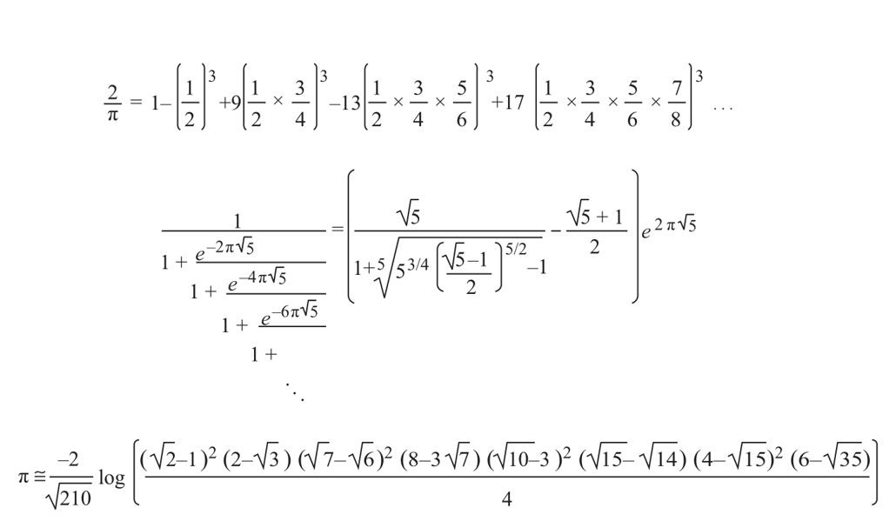

数学史上最传奇的一件事，发生在1913年1月的一个早上，哈代（Hardy）教授收到了一封来自印度的奇怪的信1。哈代在36岁时就成为著名的数学家，堪称英国最聪明的数学家。作为剑桥三一学院的教授，他当时刚被选为英国皇家学会会员。在英国皇家学会，哈代经常与像怀特海和罗素这样非凡的思想家进行平等的交流。因此，我们可以想象当他看到这封来自印度的信时有多生气。一个名为斯里尼瓦瑟·拉马努扬的陌生印度人，用语法拙劣的文句要求哈代对他的几个定理提出一些见解。
虽然哈代对业余数学家心存偏见，但随着他将越来越多的注意力投向拉马努扬笔下那些神秘的数学公式，并去破译它们时（见图6-1），他很快就着了迷。这些定理中有些历史悠久，但拉马努扬究竟是如何做到像呈现自己的定理一样将它们呈现出来的呢？有一些定理是通过间接的途径从一些深奥的数学结果中推导而来的，哈代对这些数学结果非常熟悉，因为他个人对此做出过贡献。但是最后几个公式他并没有听说过，它们由一长串的平方根、指数函数以及连续分数组成，如同混合而成的独特的“鸡尾酒”，其来源却难以理解。

拉马努扬神秘公式的一小部分，对数字π的表达精确到了20位小数。
图6-1 拉马努扬的神秘公式
哈代从来都没有遇到过这种情况。这不可能是一个恶作剧。他确信自己面对的是一个一流的天才。正如他后来在自传中阐述的那样：“公式必定是真的，因为如果它们不是真的，没有人会有足够的想象力去创造它们。”2在接到信的第二天，哈代决定帮助拉马努扬，让他来剑桥。以此为起点，两人的合作成果颇丰，几年后，拉马努扬被选入英国皇家学会，这标志着他们的合作进入巅峰期。1920年4月26日，33岁的拉马努扬不幸去世，一场伟大的合作就此结束。
我们完全可以带一点点讽刺意味地说：拉马努扬的天赋超过了牛顿，因为他看得比很多数学家都远，但是并没有“站在任何人的肩膀上”。拉马努扬出生在印度一个贫穷的婆罗门家庭，只在当地的学校读过9年书，从来没有获得过大学学位。然而早在童年时期，他的数学天赋就显现出来了。他完全依靠自己重现了把三角函数与指数函数相联系的欧拉公式，并且在12岁时就已经掌握了罗尼（Loney）的《平面三角学》（Plane Trigonometry）。
16岁时，拉马努扬遇到了决定他数学爱好的第二本书，即卡尔（Carr）的《纯粹数学和应用数学基本结果概要》（A Synopsis of Elementary Results in Pure and Applied Mathematics）——这本汇编概略说明了6 165个定理。通过对这个简单册子的学习，以及独立地再现过去几百年间的数学发展，拉马努扬获得了一种“前无古人，后无来者”的非凡能力：对正确公式的神秘理解力以及对数值关系的精确直觉。他在设想新的算术关系方面具有无与伦比的能力，这是前人做梦都想不到的，而他仅在直觉的基础上就可以获得。令数学家们感到绝望的是，直到现在，他们还在竭力为拉马努扬笔记本上那几百个公式提供严格的证明或反驳证据。
拉马努扬声称，他发现的定理是由纳玛姬莉（Namagiri）女神(17)“在夜间写在他舌头上”的。起床后，他通常会疯狂地写下那些让同事迷惑不解的、意想不到的结果。我对拉马努扬的说法相当怀疑。这个问题应该交由神经心理学家来判断。心理学或神经学能否尝试着去解释，这个独特的大脑为什么具有如此非凡的创造力？
在拉马努扬去世大约50年后，英国见证了另一位天才的诞生，他的天赋在很多方面堪比拉马努扬，但其生长环境却与拉马努扬截然不同。迈克尔（Michael）是一个智力发育迟滞的孤独症患者，英国心理学家贝亚特·赫梅林（Beate Hermelin）和尼尔·奥康纳（Neil O’Connor）对他进行了多年研究3。作为一个孩子，他遭受着巨头症以及早期脑损伤导致的痉挛的折磨。他是一个不安且具有破坏性的孩子，他觉察不到危险，似乎生活在一个封闭的、以自我为中心的世界里。他从不以摆手示意再见，也不会用手指指向物品——通常幼儿会自发地学会这些手势。他对成人的陪伴也没有任何兴趣。
在迈克尔20岁时，他仍然不会说话。他从不学习手语，也没有证据显示他可以理解词语。任何需要用到词语的测试都无法测出他的言语智商。甚至在非言语的测试中，他的智商也只有67。在所有有关物品的日常知识测试中，他基本上都失败了。
为什么要把这个存在严重障碍的孤独症患者与印度数学天才做比较呢？两人之间有令人意想不到的相似性：尽管迈克尔心理发育迟滞，但他也精通算术。6岁左右，他学着抄写字母和10个阿拉伯数字。从那时起，加减乘除以及因数分解就成了他最喜欢的消遣。货币、钟表、日历、地图也都让他着迷。在用逻辑测试进行评估时，他的智商达到了128，远高于常模平均数。尽管迈克尔不能命名一辆汽车或一只兔子，但他能快速地意识到627可以分解为“3×11×19”！仅需1秒多的时间他就能确定一个三位数是素数（即这个数不能通过两个较小的数相乘得到）。一个拥有数学学位的心理学家在试图完成这个任务时，至少会花费10倍的时间。
一个不会说话、心理发育迟滞的人，为何同时也是一名速算者呢？一个成长在贫穷印度家庭的人，是如何在缺失大部分说明的两本书的帮助下，成为高水平数学家的呢？心理学家目前已经知道，世界上有数百个像迈克尔这样的“智障学者”。他们中的有些人能说出过去或将来任意一天是星期几，另一些人能快速心算出两个六位数的和，所用时间比我们在电话机上按出这些数字的时间还要短得多。然而，这些人往往缺乏人际智能，甚至可能缺乏语言能力。这些奇才的存在是否威胁到我在上一章中所提到的理论呢？他们是如何规避我们都会遇到的计算困难的？赋予他们良好数学直觉的“第六感”的本质是什么呢？我们是否应该认同他们有着特殊的大脑组织形式，拥有对算术的天赋呢？